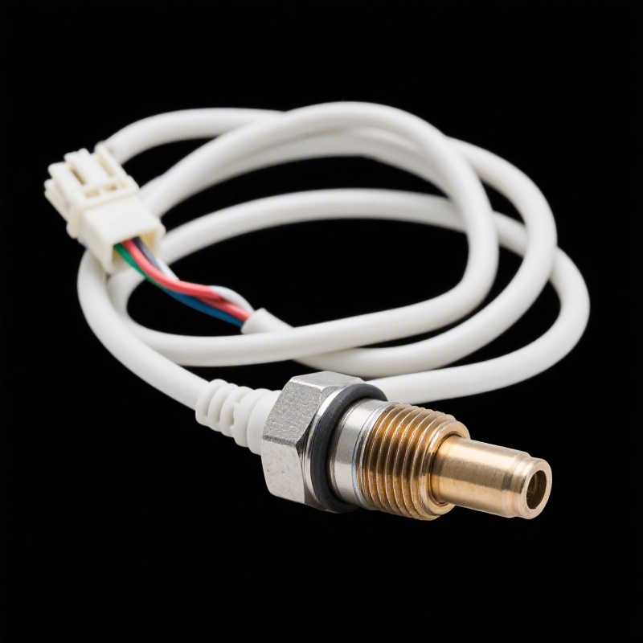

The part number 021906265A is a factory-reference oxygen sensor used across selected Volkswagen models. This page gathers the cross-reference data, application list and sourcing details buyers usually need before placing a wholesale order with KingMay.
OE 021906265A is a Oxygen Sensor reference. In the Hyundai-Kia numbering system the prefix 02190 denotes the Oxygen Sensor family, which holds 9 references in KingMay's Guangzhou catalog. Wholesale MOQ is 10 pieces; quotes are issued within one business day.
How 021906265A decodes in the Hyundai-Kia catalog system. The prefix identifies the component family; the suffix carries model and variant information.
| Field | Value |
|---|---|
| Full reference | 021906265A |
| Normalized (no hyphen) | 021906265A |
| Prefix (family code) | 02190 |
| Prefix maps to | Oxygen Sensor |
| References sharing prefix 02190 | 9 in KingMay catalog |
| Numbering family | Hyundai-Kia 5+5 format |

Other part numbers frequently ordered together with 021906265A by wholesale clients.
| OE Number | Component |
|---|---|
| 0009056204 | Oxygen Sensor for MERCEDES-BENZ SLK, TOYOTA PRIUS (_W3_), PR |
| 0095420617 | Oxygen Sensor for AUDI A4, BMW 3 Series, MERCEDES-BENZ G-CLA |
| 021906262C | Oxygen Sensor for AUDI TT, VW SHARAN, SEAT EXEO ST (3R5), SK |
| 021906265C | Oxygen Sensor for VW DERBY, SEAT TOLEDO I (1L2), TOLEDO (1L2 |
| 021906265N | Oxygen Sensor for VW DERBY, SEAT TOLEDO I (1L2), TOLEDO (1L2 |
| 022906265A | Oxygen Sensor for AUDI R8, BMW 5 Series, MERCEDES-BENZ SPRIN |
| 0258005179 | Oxygen Sensor for AUDI A4, VW SHARAN, FORD GALAXY I (WGR), S |
| 030906262D | Oxygen Sensor for AUDI A4, VW BORA, SEAT IBIZA II (6K1), IBI |
References that share the 02190 family prefix with 021906265A. In the Hyundai-Kia numbering system the leading five digits identify the component family, so these numbers usually belong to the same assembly group and are ordered together by distributors building a consolidated shipment. Always confirm the variant suffix, connector layout and dimensions before substituting one reference for another.
Other part numbers in the electrical & sensors group that wholesale clients order alongside OE 021906265A. Grouping mixed references into one shipment is how most importers reach full-container freight thresholds.
Browse all 1,350 Electrical & Sensors OE references → · ← Previous in Electrical & Sensors · Next in Electrical & Sensors →
| Item | Detail |
|---|---|
| Export packing | Neutral carton, inner foam protection; custom labels on request |
| Lead time | 7 working days (stock) · 25-35 days (production run) |
| Shipping terms | FOB Guangzhou / Shenzhen; CIF & DDP negotiable |
| Payment | T/T, LC at sight for contracts; sample orders by T/T |
| QC documentation | Packing list + photo report + dimension check per shipment |
The questions below are the ones buyers raise most often about OE 021906265A — fitment, fault symptoms, cross-references, pricing and export terms. Each answer is written to be quotable on its own.
Watch for noise on cold start, vibration under load, warning lights, fluid seepage or uneven operation. Once any of those appears the oxygen sensor should be inspected, and reference 021906265A replaced if it measures outside specification.
Yes, if the alternate shares the same engineering envelope. Shortlist candidates from the Related OE References table, then check bolt pattern, electrical pinout and material grade. A difference in any of those three means it is a different part, not a substitute.
KingMay supplies OEM-grade aftermarket parts built to the 021906265A factory specification: material grade, dimensional tolerance and surface finish follow the original tooling. They are not dealer-boxed genuine parts, and we quote them that way so there is no ambiguity at customs.
Aftermarket oxygen sensor comes from tooling houses that hold the original drawings or licensed equivalents. KingMay sources from vetted factories and inspects each batch; the manufacturer name is available on request where your market requires origin documentation.
Export packing is a neutral carton with inner protection; custom labels, barcodes and box specifications are available for volume orders. Shipments move FOB Guangzhou or Shenzhen, with CIF and DDP terms negotiable.
Match three things: the code on the part you are removing, the build-year range in the Applications table, and the mounting points visible in the reference photo. If all three line up, 021906265A is a confirmed fit. Send your VIN and our export desk will double-check the ambiguous cases.
Buyers searching for OE 021906265A most often land on these pages next.
Request a wholesale quote for 021906265A through our contact page — most quotations return within one business day. All 021906265A shipments leave with a packing list, photo documentation and QC report. Combined orders with other Hyundai-Kia references can share one container to cut landed cost. Payment terms are negotiable for established distributors; first-time buyers are welcome to start with a sample lot.
Send quantity + destination port. Quotations typically return within one business day.